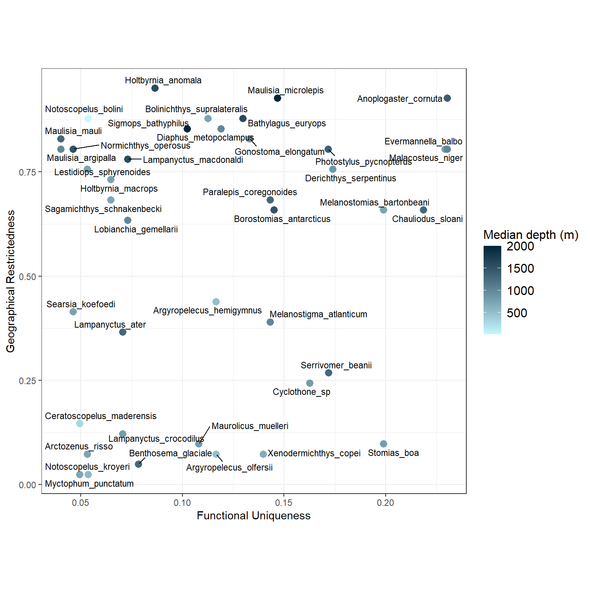

## Summary of the assemblages * species data.frame ----asb_sp_fish_summ <- mFD::asb.sp.summary(asb_sp_w = depth_fish_biomass)asb_sp_fish_occ <- asb_sp_fish_summ$"asb_sp_occ"htmltools::tagList(DT::datatable(asb_sp_fish_occ))
2.2 Computing distances between species based on functional traits
We have non-continuous traits so we use the Gower distance(metric = “gower”) as this method allows traits weighting.
Code
sp_dist_fish <- mFD::funct.dist(sp_tr = fish_traits,tr_cat = fish_traits_cat,metric ="gower",scale_euclid ="scale_center",ordinal_var ="classic",weight_type ="equal",stop_if_NA =TRUE)## Output of the function mFD::funct.dist() ----round(sp_dist_fish, 3)
2.3 Building functional spaces and chosing the best one
2.3.1 Computing several multimensional functional spaces and assessing their quality
-mFD evaluates the quality of PCoA-based multidimensional spaces according to the deviation between trait-based distances and distances in the functional space (extension of Maire et al. (2015) framework).
This function generates a figure with three panels (in rows) for each selected functional space (in columns). Each column represents a functional space, the value of the quality metric is written on the top of each column. The x-axis of all panels represents trait-based distances. The y-axis is different for each row:
on the first (top) row, the y-axis represents species functional distances in the multidimensional space. Thus, the closer species are to the 1:1 line, the better distances in the functional space fit trait-based ones.
on the second row, the y-axis shows the raw deviation of species distances in the functional space compared to trait-based distances. Thus, the raw deviation reflects the distance to the horizontal line.
on the third row (bottom), the y-axis shows the absolute or squared deviation of the (“scaled”) distance in the functional space. It is the deviation that is taken into account for computing the quality metric.
2.3.3 Testing the correlation between functional axes and traits
Functional distinctiveness is the mean of dissimilarity of the focal species to all the other species of the set of interest. It can be abundance-weighted if needed.
Functional uniqueness is the smallest dissimilarity that exists between the focal species and the all other species in the set. It does not consider the abundance of any species.
Rarity indices:
Scarcity is proportional to the relative abundance of the species. It gets close to one when the species is (relatively) rare and close to 0 when its dominant
Restrictedness is 1 minus the ratio of sites a species occupy over the total number of sites.
4.2.Computing functional rarity
4.2.1 Functional originality at regional scale
For the choice or dissimilarity matrix we can use the raw dissimilarity matrix computed directly on raw traits values among species:
Another option would be to compute a new functional dissimilarity matrix based on the selected functional axes. One advantage of the latter is that it already takes into account the correlation between traits (recompute regional functional distinctiveness based on the n selected functional axes. Because the space comes from a PCA, we can directly use euclidean distance):
Code
new_dissim <-dist(sp_faxes_coord_fish[, c("PC1", "PC2", "PC3", "PC4")])sp_di_alt <- funrar::distinctiveness_global(new_dissim, di_name ="alt_di")#We can now compare both distinctiveness values.sp_all_di <-merge(sp_di, sp_di_alt, by ="species")plot(sp_all_di$distinctiveness, sp_all_di$alt_di)
Pearson's product-moment correlation
data: sp_all_di$distinctiveness and sp_all_di$alt_di
t = 16.068, df = 18, p-value = 4.058e-12
alternative hypothesis: true correlation is not equal to 0
95 percent confidence interval:
0.9164514 0.9870620
sample estimates:
cor
0.9668623
Both seems very correlated, so in our case using either one should be fine. However, it can be better to use dissimilarity based on a reduced number of well-defined axes because: (1) there are more interpretable thanks to the multivariate analysis, (2) the first one contain of the most information, (3) they explicitly take into account potentially strong correlations between provided traits. We’ll stick here with raw dissimilarity for the sake of simplicity
To compute uniqueness at regional scale we also need the regional level functional dissimilarity matrix with the uniqueness() function, and the site-species matrix:
Code
sp_ui <- funrar::uniqueness(pres_matrix = depth_fish_biomass,as.matrix(sp_dist_fish))quantile(sp_ui$Ui, probs =seq(0, 1, by =0.1))
Based on these results we see that Anoplogaster cornuta, Evermannella balbo, and Chauliodus sloani are the most isolated fish in the functional space. Meaning that they have the most distant nearest neighbors.
Anoplogaster_cornuta Bathylagus_euryops
Upper mesopelagic NA NA
Bathypelagic 0.4222418 0.3144837
Epipelagic NA NA
Lower mesopelagic NA NA
Bolinichthys_supralateralis Borostomias_antarcticus
Upper mesopelagic NA 0.2575080
Bathypelagic 0.3095523 0.2576447
Epipelagic NA NA
Lower mesopelagic 0.2830010 0.2850685
Chauliodus_sloani Cyclothone_sp Evermannella_balbo
Upper mesopelagic 0.3573761 0.3026306 0.3494591
Bathypelagic 0.3382178 0.2912187 0.3361591
Epipelagic NA 0.2878235 NA
Lower mesopelagic 0.4036351 0.2985873 0.3558329
Gonostoma_elongatum Holtbyrnia_anomala Lampanyctus_macdonaldi
Upper mesopelagic NA NA NA
Bathypelagic 0.2678535 0.3744546 0.2583958
Epipelagic NA NA NA
Lower mesopelagic 0.3187773 NA NA
As we had to manually build the function to compute the local uniqueness the results are strangely formatted.
We provide here a function that can help them to be more easily read:
Code
depth_ui <-lapply(names(depth_ui), function(x) { single_depth = depth_ui[[x]] single_depth$site = xreturn(single_depth)})depth_ui <-do.call(rbind, depth_ui)#Then we can again look at the apple to see how its uniqueness varies across depths.subset(depth_ui, species =="Melanostomias_bartonbeani")
Anoplogaster_cornuta Bathylagus_euryops Bolinichthys_supralateralis
Min. :0.9936 Min. :0.8411 Min. :0.7750
1st Qu.:0.9936 1st Qu.:0.8411 1st Qu.:0.8303
Median :0.9936 Median :0.8411 Median :0.8856
Mean :0.9936 Mean :0.8411 Mean :0.8856
3rd Qu.:0.9936 3rd Qu.:0.8411 3rd Qu.:0.9409
Max. :0.9936 Max. :0.8411 Max. :0.9962
NA's :3 NA's :3 NA's :2
Borostomias_antarcticus Chauliodus_sloani Cyclothone_sp
Min. :0.8473 Min. :0.6822 Min. :0.000004
1st Qu.:0.8928 1st Qu.:0.7000 1st Qu.:0.075606
Median :0.9383 Median :0.7178 Median :0.251335
Mean :0.9166 Mean :0.7800 Mean :0.354920
3rd Qu.:0.9513 3rd Qu.:0.8289 3rd Qu.:0.530650
Max. :0.9642 Max. :0.9399 Max. :0.917004
NA's :1 NA's :1
Evermannella_balbo Gonostoma_elongatum Holtbyrnia_anomala
Min. :0.5546 Min. :0.6401 Min. :0.9867
1st Qu.:0.7009 1st Qu.:0.7278 1st Qu.:0.9867
Median :0.8473 Median :0.8156 Median :0.9867
Mean :0.7995 Mean :0.8156 Mean :0.9867
3rd Qu.:0.9220 3rd Qu.:0.9033 3rd Qu.:0.9867
Max. :0.9968 Max. :0.9911 Max. :0.9867
NA's :1 NA's :2 NA's :3
Lampanyctus_macdonaldi Lestidiops_sphyrenoides Lobianchia_gemellarii
Min. :0.8672 Min. :0.7711 Min. :0.3134
1st Qu.:0.8672 1st Qu.:0.8222 1st Qu.:0.7281
Median :0.8672 Median :0.8798 Median :0.8723
Mean :0.8672 Mean :0.8822 Mean :0.7568
3rd Qu.:0.8672 3rd Qu.:0.9399 3rd Qu.:0.9009
Max. :0.8672 Max. :0.9981 Max. :0.9692
NA's :3
Maulisia_mauli Maurolicus_muelleri Melanostomias_bartonbeani
Min. :0.9156 Min. :0.02183 Min. :0.09822
1st Qu.:0.9180 1st Qu.:0.07175 1st Qu.:0.60577
Median :0.9205 Median :0.15668 Median :0.86628
Mean :0.9198 Mean :0.32594 Mean :0.70342
3rd Qu.:0.9219 3rd Qu.:0.41087 3rd Qu.:0.96393
Max. :0.9234 Max. :0.96857 Max. :0.98290
NA's :1
Lampanyctus_ater Photostylus_pycnopterus Sagamichthys_schnakenbecki
Min. :0.4097 Min. :0.9962 Min. :0.7178
1st Qu.:0.5223 1st Qu.:0.9962 1st Qu.:0.7589
Median :0.7288 Median :0.9962 Median :0.8000
Mean :0.7062 Mean :0.9962 Mean :0.8384
3rd Qu.:0.9127 3rd Qu.:0.9962 3rd Qu.:0.8987
Max. :0.9576 Max. :0.9962 Max. :0.9974
NA's :3 NA's :1
Notoscopelus_bolini
Min. :0.1552
1st Qu.:0.5393
Median :0.9234
Mean :0.6912
3rd Qu.:0.9592
Max. :0.9949
NA's :1
__ restrictiveness__:
Code
ri = funrar::restrictedness(depth_fish_biomass)summary(ri)
species Ri
Length:19 Min. :0.0000
Class :character 1st Qu.:0.0000
Mode :character Median :0.2500
Mean :0.3289
3rd Qu.:0.6250
Max. :0.7500
4.3 Plotting functional rarity
4.3.1 Plotting functional originality
option to be able to colour species according to their functional originality (and not use the ready-made functions in the mfd package)
As was done with mFD to correlate the functional axes with species’ traits we can correlate functional distinctiveness to specific traits in order to see which traits are mainly driving distinctiveness.
Regarding local level functional originality indices, the visualization can be more difficult to grasp and depends highly on the question. Would you rather focus on visualizing the functional distinctiveness of one species across communities? Compare the distribution of functional distinctiveness values across communities?
One idea to keep in mind is that averaging functional distinctiveness per community is exactly equal to computing functional dispersion. Functional originality is computed on a species basis, so we should be aware that if we are rather interested by community properties than we can compute functional diversity metrics which are much more appropriate.
sp_di_ri <-merge(sp_di, ri, by ="species")sp_di_ri_ui <-merge(sp_di_ri, sp_ui, by ="species")plot_dist_ri_reg <-ggplot(sp_di_ri, aes(distinctiveness, Ri)) +geom_point() + ggrepel::geom_text_repel(aes(label = species)) +labs(x ="Functional Distinctiveness", y ="Geographical Restrictedness") +theme_bw() +theme(aspect.ratio =1)plot_dist_ri_reg

On this visualization we can clearly see that Anoplogaster cornuta is overall the most distinct species while being quite restricted in terms of depth. On the other hand, the two Myctophidae Lampanyctus ater and Lobianchia_gemellarii are the most functionally common and regionally widespread species (low restrictedness).